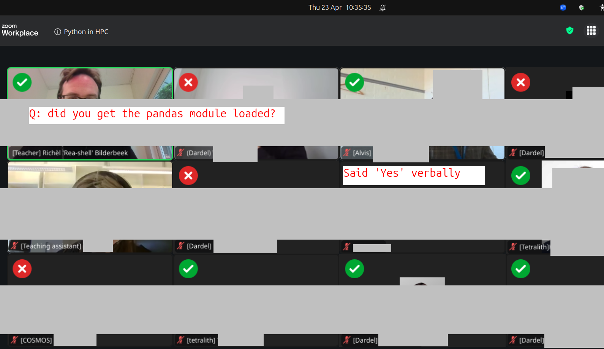
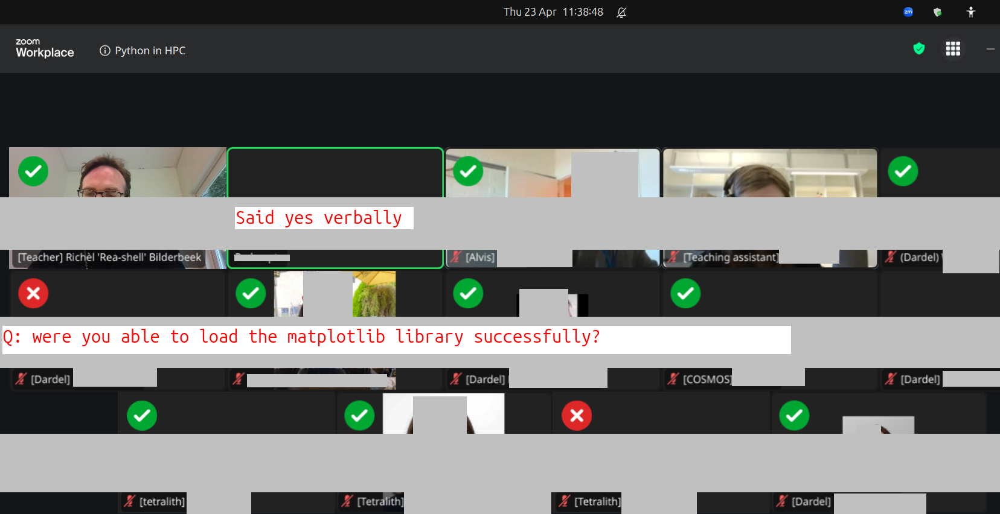

Reflection
Day 3
Date: 2026-04-23
Author: Richel
10:10
So far, so good.
Decided to rep
Poor Dardel users.
Extend the time for pandas for 15 minutes, so everyone is up to speed
There were 10 learners mostly present, with an additional 3 being present only a short while.
12:58
Shared with the colleagues:
Results of the morning:
Being able to use pandas:
Success: at least 6 out of 10 (at the time of polling), I estimate 9 out of 10 at the end of these sessions
Fail (at the time of polling): 3x Dardel, 1x COSMOS or Dardel (this learner tried both, 1 of the 2 worked)

Being able to use matplotlib:
Success: at least 8 out of 10 (at the time of polling), I estimate 11 out of 12 at the end of these sessions (there were some learners that arrived later)
Failed (at the time of polling): 1x Dardel, 1x Tetralith

Being able to use seaborn: unknown
Actual schedule:
9:00-10:00: pandas 1
10:15-10:30: pandas 2
10:30-11:30: matplotlib
11:30-12:00: seaborn intro and troubleshooting
Teaching went smoothly.
The single biggest cause of problems was Dardel:
users could not get it to work (even when they could do so before) and 1 learner even submitted a ticket to be able to login (I could not help her: all seemed to be correct).
documentation is mostly absent
I spent most of my time troubleshooting with Dardel users.
At 11:30 I gave a short seaborn intro, after which I encouraged the learners that have gotten everything to work to go have an early lunch. In that way, me and my assistant had the time to troubleshoot the last learners. This was a smart move: in the end, all learners seem to have achieved my desired learning outcomes.
Working together with my teaching assistant worked super smoothly.
In the end: I am happy that there was enough time for everybody to catch up.
Evaluation results
Let’s first take a look at how the sessions went:

Question |
Mean |
My response |
|---|---|---|
I can decide on useful file formats for big data |
2.15 |
Not mine |
I can work (i.e. inspect, clean, sort, etc) on my data with Pandas |
3 |
Did not take the time to teach this |
I can make a plot with Seaborn |
3.17 |
This is low |
I can read and write tabular data with Pandas |
3.31 |
This is low |
I can write a batch script |
3.5 |
Not mine |
I can submit a script to the job scheduler |
3.69 |
Not mine |
I can make a plot with matplotlib |
3.75 |
This is low |
The mean confidence for the sessions I taught are all low (I use 4.0 as a hinge point). I expect the Dardel users, of which most were unable to use Dardel properly (i.e. documentation is lacking and the remote desktop was down), are a cause of this. Let’s take a look at the confidences per question:

I see 3 learners have no confidence in that they can create a plot using Seaborn. In the lesson, I’ve seen all learners complete all exercises, i.e. to the extend that they could complete the exercises: the learners that had completed the exercises were sent on an early lunch, where the others got their extra attention. Maybe I sent those 3 learners on an early lunch myself, as they could not do the exercises?
Taking a look at all confidences:

A 64% of the day as a whole (and a 66% for my sessions) is maybe the lowest ever. Could this be caused by Dardel and the more complex topics? No idea…
We know the course ratings do not correlate with course quality. Let’s ignore.
We know the ‘Would you recommend this course?’ mostly correlates with the quality of the helpers. Let’s ignore.
Let
About the pace:
good
good
Richèl’s sessions had a good pace, the rest were way too fast with too little time for exercises and too little time for breaks.
Yay!
more practice
I assume this is not about my session.
good
Good, did well balancing levels across a large group
I like the way that Richèl is teaching. He makes the concepts clear and you can follow his instructions and learn. However, I cannot follow the class when Bjorn is teaching, I feel very lost.
The overall pace was OK
Pace seems to be OK, it’s probably me who is slower than the pace :)
A bit uneven. I think more time is needed
I agree with the uneven pace. I think ‘more time is needed’ should better be ‘more time for exercises is needed’
OK
About future topic:
We did not even get to practice what is already in the course properly
I agree.
GNNs
This is for Jayant to ponder, as he teaches machine learning.
More information about how analyze big data such as genomic or transcriptomic data.
This is for Björn to ponder, as he teaches big data.
More examples on how to run Python codes as batch jobs.
This is for Birgitte to ponder, as she teaches the job scheduler.
More about finding modules
This is for Björn to ponder, as he teaches how to find modules.
Other comments (both from NAISS survey as the hastily added Google Form):
more cases, like, an OOM killed job, how to seff it and solve the issue to run it properly
I agree that job optimization is missing.
Use Richèl’s teaching style for all topics.
Yay!
Keep the amount of content in the course as it is, but spread it over 5 days instead of 4 days. There’s simply way too much to go through, way to many potential technical difficulties that take time, and way too little time to do exercises to actually absorb all the content and enjoy the learning process.
I feel that less lecturing and more exercises would solve this too.
And I would suggest that the course on how to connect and work in an HPC environment be moved to before this course during the same semester, so that people don’t have to deal with having to learn that at the same time. Right now the “Online training events for new users: NAISS Introduction training days” course is after this course during the semester, which makes little sense considering that its contents should be a prerequisite for this course.
I wonder how this learner missed the other earlier events: there was a NAISS Intro Week on 2 to 6 February 2026. Would I have missed this -as this learner has- I would fully agree.
Where should we improve? materials, exercises, and structure
I wish I knew which sessions this was about…
For me personally, the time spent interacting with the cluster and getting familiarised was the most useful. This is personal though an I’m not sure whether this would be the case across the board.
I assume that the exercises were seen as most useful. As I has most time scheduled on doing exercises, I see this as a hint that my sessions were most useful.
Today (day3), the topics were more of what I expected from an Introduction to Python and Using Python in an HPC environment course.
Interesting! I wonder how this expectation would be phrased, so I could understand what was it that made this expectation come true.
The morning session about pandas, matplotlib and seaborn was interesting, as well as the big data with python. I will probably use Dask in the future so it was a good explanation of how Dask works.
Sure…
I still don’t understand the time spent talking about bash and sending jobs. We could use that time learning and using common python packages in an HPC cluster.
I think this is an interesting idea: why discuss the job scheduler in a Python course? I assume we schedule teaching the job scheduler because else our learners will struggle too much with it…?
I see that this is in the learning outcomes (‘You can write and submit batch job scripts’ and ‘You can use the compute nodes interactively’).
However, I do see that a pre-requirements for Day 3 is:
On your HPC cluster, you can:
Load a software module for Python packages
Submit a batch script to the job scheduler
Which makes sense: we teach it on Day 2.
So then, I agree with the learner:
Why teach about the job scheduler on Day 3 if it is both a prerequisite and taught the day before?
I will ask:
Ask in meeting: why do we teach the job scheduler on Day 3?
It think that we need more documentation about Dardel.
I agree. I hope tickets are submitted :-)
Also, we need more hands-ons and demonstrations.
Unsure which sessions need more hands-on. As my sessions had scheduled most time for exercises, I assume this does not apply to mine.
Unsure which sessions need more demonstrations. I am even unsure if a demonstration would be the right thing to do, for a course that teaches multiple HPC clusters: which cluster should we use to demonstrate something?
I feel some exercises are not in “step-by-step” format that makes difficult to complete it.
I feel this does not apply to me, as I just checked to see that my exercises follow a step-by-step format.
I think there is very little material on the pandas/matplotlib/seaborn part and would like there to be more so I can redo it later myself. This just tells you were to go look for the info and that could be put in a box at the bottom.
I agree. It is part of my learning outcomes to make you familiar with the original documentation, hence copy-pasting it makes no sense.
I am not fond of the way Richel teaches (sorry - he is very nice).
That’s OK :-) . I wish I knew the specific teaching behavior this learner did not like. I have had learners in the past that prefer self-study, which took my offer to instead just work alone. I know some learners prefer passive ‘learning’ (it is quite ineffective) and will dislike active teaching. Those learners would indeed have the wrong teacher with me.
[Comment continues] I prefer to have more theory and material to read and then also show some demos.
Interesting! About the theory and material: I have not seen any learner complete (or even start) the optional/extra material. Maybe this learner does not like exercises? I can imagine learners that do not want to test if they actually understood the material: learning takes effort, which not everyone is willing to do.
About the demos: I am working on my Feedback phase. When I figured this out more, I may add demos. Still, with learners having different speeds, it is a challenge to do a demo at the right time.
Maybe if there was more time for this course. I really think you should have it a full week.
Noted.
At first I didn’t understand why we need to learn about batch since most people use IDEs now but I realized that batch is also part of HPC and that there may be some people who still submit jobs to batch and doesn’t just work in jupyter
Aha, a learner that understood on this day why the job scheduler was taught earlier.
Really good course. Good balance between Python and the cluster. Getting familiar with the cluster was more relevant to me, but other aspects of the course were still well taught irrespective.
Unsure if the ‘getting familiar with the cluster’ applies to my sessions…
I think the afternoon was rather too compact and not much time to actually practice anything. I would first maybe make sure that everyone can get the different modules/packages installed. I spent most of my time just trying to do that instead of completing the practical parts… Again like yesterday, not clear what the lecture is about really
Not my sessions.
I still cannot login to ThinLinc even after yesterday’s objective problem. That makes big gaps in doing exercises.
I agree.
Conclusions
Three hours for these sessions is a good amount of time
Self-assessed confidence on my sessions were unusually low. The effect of Dardel being down and Dardel having unsatisfactory documentation is expected to be present, making it harder to judge my teaching. However, during the lessons, I saw the learners achieve my learning outcomes.
Let’s ask why we teach the job scheduler on Day 3